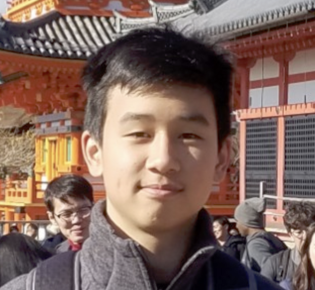
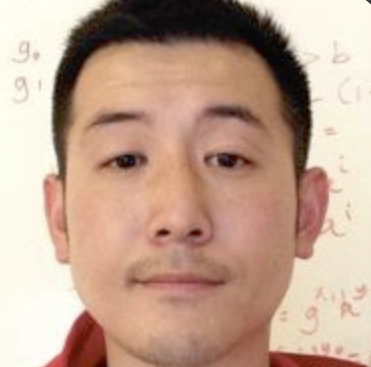

Trisha Razdan
Trisha Razdan is currently a senior at Palo Alto High School. She has experience in Java, Ruby, and Python from taking AP Computer Science in school, as well as an Intermediate Game Design course previously. Last year, she created a website for the LEMO Foundation's Playmakers initiative to allow for outside sponsorship to support more kids. In her free time, she plays volleyball and binges The Office. Trisha has been around tech her whole life and hopes to bring that exposure to more kids from the Bay.

Andrew Li
Andrew Li is currently a senior at Palo Alto High School. He has experience in Python and Java and has taken the AP Computer Science, as well as Functional and Object Oriented Programming. He has created a machine learning project which aims to predict the results of the annual collegiate basketball March Madness tournament and is mentored by a computer scientist with a Stanford Ph.D. Andrew likes to spend his free time playing basketball and tutoring others, which drove him to join OpenBrackets.
Katherine Cheng
Katherine Cheng is currently a senior at Palo Alto High School. She has experience in Java through her AP Computer Science at school, and has taught beginning game development to elementary and middle school students. Through tutoring and working with several nonprofit organizations dedicated to helping low income students in the Bay Area, Katherine is always looking to help out members of the community. In her free time, she enjoys discovering new trails to run at with her family and friends.

Stanley Zhong
Stanley Zhong is a sophomore at Gunn High School. He is well-versed in C++ and Python, and is also familiar with Java, HTML, CSS, JavaScript, COBOL, and Scheme. Most of his knowledge is self-taught through collaborative projects. Last summer he built a rudimentary website of games with one of his friends. He is also ranked in the top 150 in the US on the competitive programming website Codeforces. As someone who was lucky enough to be introduced to programming at a young age, Stanley hopes to help other kids learn and benefit from programming.

Thomas McGall
Thomas McGall is a senior at Palo Alto High School. He has experience with Python, Java and Javascript. He is the Lead Director of PalyHacks, a Palo Alto based hackathon and has collaborated with Palantir, Balsamiq and other industry leaders to bring educational opportunities to high schoolers in the Bay Area. Thomas believes in learning through creation and wants to help other students discover computer science using this philosophy.
Our Mentors:
Nan Zhong
Nan Zhong is currently a Software Engineering Manager at Google. Previously he co-founded two startups, created the #1 ranked communication app on Android (featured by Fortune and Amazing Android Apps for Dummies), and raised $10M in venture funding. Before that, he led the team that built AWS's Elastic Load Balancing service. He holds a Master's degree in Computer Science from the University of Illinois at Urbana-Champaign. He is a passionate believer of using education to promote equality.
Rachel Gollub
Rachel Gollub is Vice President of Benefitter Technology at UnitedHealthcare. She has founded a number of startups (including co-founding Benefitter), and has also worked in engineering at Stanford University and Sun Microsystems. She has degrees in computer science and Russian literature from Caltech, and a M.A. in military history from American Military University. Rachel is an advocate for inclusion and equity in education and hiring.

Masatoshi Tanida
Masatoshi Tanida is a software engineer with over a decade of Industry experience in a variety of domains, including Scientific Computing, Wireless, Health, and Automotive, and he is currently employed as a software engineer at an Autonomous Vehicle startup. He holds a B.S. and M.S. in computer science from UC San Diego. Masatoshi believes that high quality education should be available to students of all income levels and backgrounds.